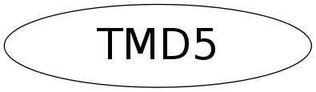

class TMD5
TMD5 This code implements the MD5 message-digest algorithm. The algorithm is due to Ron Rivest. This code was written by Colin Plumb in 1993, no copyright is claimed. This code is in the public domain; do with it what you wish. Equivalent code is available from RSA Data Security, Inc. This code has been tested against that, and is equivalent, except that you don't need to include two pages of legalese with every copy. To compute the message digest of a chunk of bytes, create an TMD5 object, call Update() as needed on buffers full of bytes, and then call Final(), which will, optionally, fill a supplied 16-byte array with the digest.
Function Members (Methods)
public:
| TMD5() | |
| TMD5(const UChar_t* digest) | |
| TMD5(const TMD5& md5) | |
| virtual | ~TMD5() |
| const char* | AsString() const |
| static TClass* | Class() |
| static TMD5* | FileChecksum(const char* file) |
| static Int_t | FileChecksum(const char* file, UChar_t* digest) |
| void | Final() |
| void | Final(UChar_t* digest) |
| virtual TClass* | IsA() const |
| TMD5& | operator=(const TMD5& rhs) |
| void | Print() const |
| static TMD5* | ReadChecksum(const char* file) |
| Int_t | SetDigest(const char* md5ascii) |
| virtual void | ShowMembers(TMemberInspector& insp) |
| virtual void | Streamer(TBuffer& b) |
| void | StreamerNVirtual(TBuffer& b) |
| void | Update(const UChar_t* buf, UInt_t len) |
| static Int_t | WriteChecksum(const char* file, const TMD5* md5) |
Class Charts
{kind=link}
{kind=link}
{kind=link}
{kind=link}

Function documentation
TMD5(const TMD5& md5)
MD5 copy ctor. Special copy ctor avoids copying unnecessary temp arrays when finalized.
TMD5 & operator=(const TMD5& rhs)
MD5 assignment operator. Special assignment operator avoids copying unnecessary temp arrays when finalized.
void Final(UChar_t* digest)
MD5 finalization, ends an MD5 message-digest operation, writing the the message digest and zeroizing the context. Returns digest.
void Final()
MD5 finalization, ends an MD5 message-digest operation, writing the the message digest and zeroizing the context.
const char * AsString() const
Return message digest as string. Returns "" in case Final() has not yet been called. Copy result because it points to a statically allocated string.
void Encode(UChar_t* out, const UInt_t* in, UInt_t len)
Encodes input into output. Assumes len is a multiple of 4.
void Decode(UInt_t* out, const UChar_t* in, UInt_t len)
Decodes input into output. Assumes len is a multiple of 4.
void Transform(UInt_t* buf, const UChar_t* in)
The core of the MD5 algorithm, this alters an existing MD5 hash to reflect the addition of 16 longwords of new data. Update() blocks the data and converts bytes into longwords for this routine.
Int_t SetDigest(const char* md5ascii)
Set the digest from the ASCII representation 'md5ascii'. The caller is responsible to make sure that the 32 chars md5ascii are valid. Returns -1 if md5ascii is malformed, returns 0 otherwise.
TMD5 * ReadChecksum(const char* file)
Returns checksum stored in ASCII in specified file. Use to read files created via WriteChecksum(). The returned TMD5 object must be deleted by the user. Returns 0 in case the file cannot be opened or in case of error. Static utlity function.
Int_t WriteChecksum(const char* file, const TMD5* md5)
Writes checksum in ASCII format to specified file. This file can directly be read by ReadChecksum(). The md5 must have been finalized. Returns -1 in case file cannot be opened or in case of error, 0 otherwise. Static utility function.
TMD5 * FileChecksum(const char* file)
Returns checksum of specified file. The returned TMD5 object must be deleted by the user. Returns 0 in case the file does not exists or in case of error. This function preserves the modtime of the file so it can be safely used in conjunction with methods that keep track of the file's modtime. Static utility function.
Int_t FileChecksum(const char* file, UChar_t* digest)
Returns checksum of specified file in digest argument. Returns -1 in case of error, 0 otherwise. This method preserves the modtime of the file so it can be safely used in conjunction with methods that keep track of the file's modtime. Static utility function.